1. Intro Window
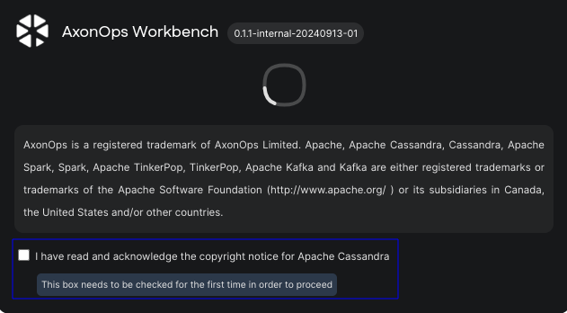
You should see a checkbox during the first launch.
1.1 Check the check box to proceed.
- 1.1.1
 The intro window has been destroyed, and the main window has been displayed.
The intro window has been destroyed, and the main window has been displayed.
- 1.1.1
-
1.2
The checkbox hasn't been displayed in the next launch.
2. Main Window
2.1 Add Workspace Process

2.1.1 Click the "ADD WORKSPACE" button #1, or the "+" button #2 at the center of the window.
- 2.1.1.1 A related dialog (#2.1.2) has been displayed when the "ADD WORKSPACE" button has been clicked.
- 2.1.1.2 Same behavior for the "+" button.
- 2.1.1.1
2.1.2 Add Workspace Dialog.

2.1.2.1 Input fields, Icons and Buttons.
2.1.2.1.1 "Workspace Name" text field.
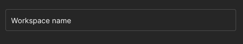
2.1.2.1.1.1
Invalid cases that should not be accepted:-
2.1.2.1.1.1.1
Only whitespaces. -
2.1.2.1.1.1.2
Duplicated name with another workspace (case insensitive). To perform this test you should click the "ADD WORKSPACE" button and get an error. -
2.1.2.1.1.1.3
Only symbols that will be removed during the sanitization process (such as |, and/), so the workspace's folder name will be empty. To perform this test you should click the "ADD WORKSPACE" button and get an error.
-
-
2.1.2.1.1.2
Otherwise, the name should be accepted - no red border covering the input field -.
2.1.2.1.2 "Workspace Color" text field.

2.1.2.1.2.1 Click the text field or focus on it.
-
2.1.2.1.2.1.1
A color picker dialog has been displayed.
-
-
2.1.2.1.2.2
A color must be set, there's no way to let the text field empty.
2.1.2.1.3 "Workspace Path" text field and its Icon.

2.1.2.1.3.1 The text field #1.
2.1.2.1.3.1.1 Click the text field.
-
2.1.2.1.3.1.1.1
A directory selection dialog has been displayed.
-
2.1.2.1.3.1.1.2
Invalid cases that should not be accepted.-
2.1.2.1.3.1.1.2.1
Inaccessible path for any reason. To perform this test you should click the "ADD WORKSPACE" button and get an error. -
2.1.2.1.3.1.1.2.2
Path where there's a folder with the same name as the workspace's folder - after the sanitization process -. To perform this test you should click the "ADD WORKSPACE" button and get an error.
-
-
2.1.2.1.3.1.1.3
Otherwise, the path should be accepted.
2.1.2.1.3.2 "Set default path" icon #2.
2.1.2.1.3.2.1 Related to the test (#2.1.2.1.3.1), change the default directory to something else.
2.1.2.1.3.2.2 Click the icon #2.
- 2.1.2.1.3.2.2.1 The path has been reverted to the default one.
- 2.1.2.1.3.2.2.1
2.1.2.1.4 Footer buttons.

2.1.2.1.4.1 "CLOSE" button #1.
-
2.1.2.1.4.1.1
The related dialog (#2.1.2) was hidden when this button was clicked. -
2.1.2.1.4.1.2
Same behavior as the X icon at the top right of the dialog  .
.
-
2.1.2.1.4.2 "ADD WORKSPACE" button #2.
-
2.1.2.1.4.2.1
Clicking this button caused to create a workspace with a success feedback. -
2.1.2.1.4.2.2
In case there's an invalid input, an error feedback showed up.
-
2.1.2.2 Add a bunch of workspaces.
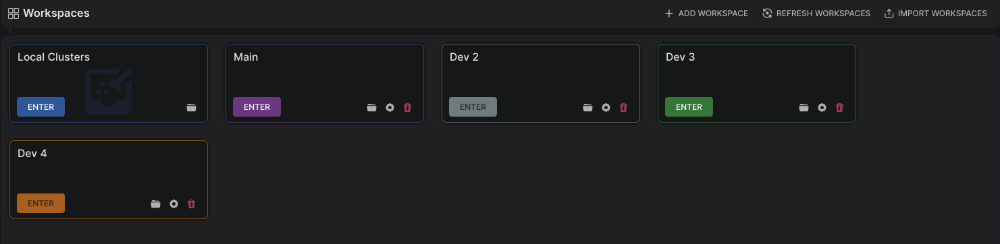
2.1.2.2.1 After finishing the test (#2.1.2), add about 3-4 workspaces.
For the upcoming tests, make sure to change the default path of one workspace at least.- 2.1.2.2.1.1 All workspaces have been added with a success feedback.
- 2.1.2.2.1.1
-
2.1.2.2.2
After adding the first workspace with success, the view has been changed, and the workspace has been displayed as a card - as the embedded image under this test (#2.1.2.2) -. After adding the first workspace, you can click the "ADD WORKSPACE" button at the top right side of the window. 
2.2 Processes Of An Added Workspace
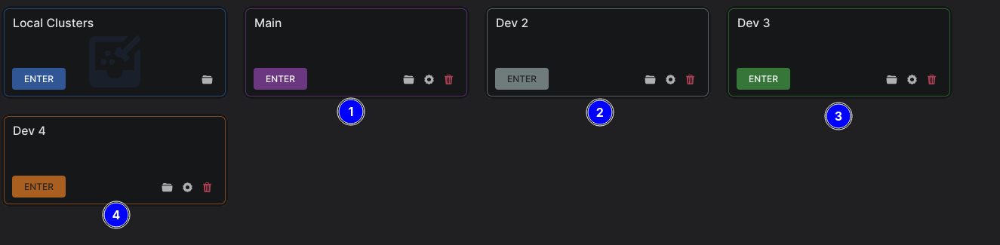
2.2.1 "Workspace folder" button.
2.2.1.1 Click the button with the folder icon - the first one from the left side -
 for any added workspace.
for any added workspace.-
2.2.1.1.1
File explorer opened pointing at the workspace's folder. -
2.2.1.1.2
All workspaces folders - especially with custom path - have been opened with success.
-
2.2.2 "Workspace settings" button.
2.2.2.1 Click the button with the cog icon - the second one from the left side -
 for any added workspace.
for any added workspace.- 2.2.2.1.1 An associated dialog (#2.1.2) showed up.
- 2.2.2.1.1
2.2.2.2 Attempt to change the name, color, and path of a workspace - all at once, or separately -.
- 2.2.2.2.1 Conditions for adding a workspace should be applied in this case too.
- 2.2.2.2.1
2.2.3 "Delete workspace" button.

2.2.3.1 Click the button with the trash icon - the third one from left side -
 for any added workspace.
for any added workspace.- 2.2.3.1.1 A related - confirmation - dialog (#2.2.3) has been displayed.
- 2.2.3.1.1
2.2.3.2 Click the "CANCEL" button #2.
- 2.2.3.2.1 Nothing should happen, the deletion process has been neglected.
- 2.2.3.2.1
2.2.3.3 Click the "CONFIRM" button #3.
- 2.2.3.3.1 The related workspace has been deleted and its card has been removed from the UI.
- 2.2.3.3.1
2.2.3.4 Click the button with the trash icon of another workspace.
2.2.3.4.1 Check the checkbox #1 then click the "CONFIRM" button #3.
-
2.2.3.4.1.1
The related workspace has been deleted and its card has been removed from the UI, in addition, its files have been kept in the system. The workspace's folder has been changed by adding a prefix _DEL_{randomString}, for exampleDEV 2_DEL_fa4b8.
-
2.3 Add Connection Process
2.3.1 Click the "ENTER" button for any added workspace.
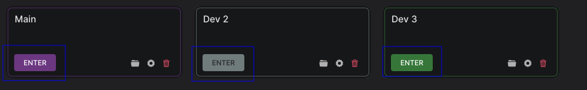
2.3.1.1 The view has been changed.
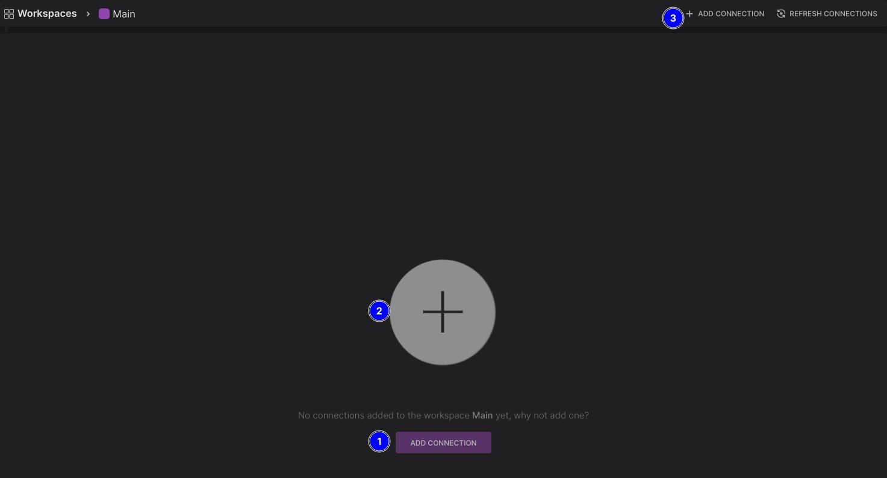
2.3.1.2 Click the "ADD CONNECTION" button #1, or the "+" button at the center of the window #2, or the "ADD CONNECTION" button #3 at the top right side of the window.
2.3.1.2.1 A related dialog (#2.3.2) has been displayed after clicking the "ADD CONNECTION" button of both #1, or #3.
2.3.1.2.2 Same behavior for the "+" button.
2.3.2 Add Connection Dialog.

2.3.2.1 Input fields, Icons and Buttons.
2.3.2.1 "Basic" section.
2.3.2.1.1 "Connection Name" text field.

2.3.2.1.1.1
Invalid cases that should not be accepted.-
2.3.2.1.1.1.1
Only whitespaces. To perform this test you should click the "ADD CONNECTION" button and get an error. -
2.3.2.1.1.1.2
Duplicated name with other connection in the same workspace (case insensitive). To perform this test you should click the "ADD CONNECTION" button and get an error. -
2.3.2.1.1.1.3
Only symbols that will be removed during the sanitization process (such as |, and/), so the connection's folder name will be empty. To perform this test you should click the "ADD CONNECTION" button and get an error. -
2.3.2.1.1.1.4
Otherwise, the name should be accepted.
-
2.3.2.1.2 "Cassandra Data Center" text field.

-
2.3.2.1.2.1
This field can be left empty without stopping the testing/adding process. -
2.3.2.1.2.2
When adding a data center that doesn't exist, an error has been shown.
-
2.3.2.1.3 "Cassandra Host Name" text field.

- 2.3.2.1.3.1 This field can't be left empty.
- 2.3.2.1.3.1
2.3.2.1.4 "Port" text field:

- 2.3.2.1.3.2 This field can't be left empty.
- 2.3.2.1.3.2
2.3.2.2 "Authentication" section.

-
2.3.2.2.1
When keeping the checkbox #1 checked, credentials have be saved in the OS keychain. To perform this test you should add a connection, then attempt to edit that connection to see if authentication credentials are filled up automatically in the fields. -
2.3.2.2.2
When unchecking the checkbox #1, credentials haven't been saved in the OS keychain, and a dialog shows up with each test/connect process. To perform this test you should add a connection, then attempt to either test or activate that connection.
-
2.3.2.3 "SSH Tunnel" section.
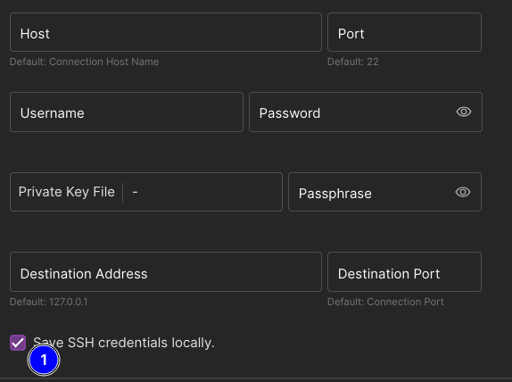
-
2.3.2.3.1
When keeping the checkbox #1 checked, credentials have been saved in the OS keychain. To perform this test you should add a connection, then attempt to edit that connection to see if authentication credentials are filled up automatically in the fields. -
2.3.2.3.2
When unchecking the checkbox #1, credentials haven't been saved in the OS keychain, and a dialog shows up with each test/connect process. To perform this test you should add a connection, then attempt to either test or activate that connection.
-
2.3.2.4 "SWITCH EDITOR" button.

2.3.2.4.1 Click the button #1 in the dialog's footer section.
-
2.3.2.4.1.1
The view in the dialog changed to an editor. To expand the editor, click the expand icon
 beside the button #1. Click the icon again to shrink the editor.
beside the button #1. Click the icon again to shrink the editor.You can also zoom-in and out the editor using CTRL and the mouse wheel.
2.3.2.4.1.2 Attempt to change any value in the editor like;
hostnameunder the[connection]section.
- 2.3.2.4.1.2.1 The change has been implemented in the UI, in the "Basic" section (#2.3.2.1) for the "Cassandra Host Name" text field (#2.3.2.1.3).
- 2.3.2.4.1.2.1
2.3.2.4.1.3 Attempt to paste a cqlsh.rc content.
2.3.2.4.1.3.1 For a valid
cqlsh.rcfile you have, attempt to paste it entirely into the editor.- 2.3.2.4.1.3.1.1 All values that have associated UI elements their value have been updated as well.
- 2.3.2.4.1.3.1.1
2.3.2.4.1.4 Pre and post connection scripts.
 This feature allows for executing scripts, or any executables in either the pre or post-connection phase. Added scripts should return
This feature allows for executing scripts, or any executables in either the pre or post-connection phase. Added scripts should return 0; which indicates success, any other returned value will be considered to be a failure.While focusing on the editor, press CTRL+F to search inside it.
Look for
[preconnect]and[postconnect]sections, and have a look at the description.
2.3.2.4.1.4.1 Add scripts/executables/bat files paths to be executed in the pre-connection phase.
2.3.2.4.1.4.2 Add scripts/executables/bat files paths to be executed in the post-connection phase.
-
2.3.2.5 "TEST CONNECTION" button.

2.3.2.5.1 After finishing previous tests, click the button #1 in the dialog's footer section.
-
2.3.2.5.1.1
A spinner #1 showed up, and an Xbutton #2 showed up after a short time.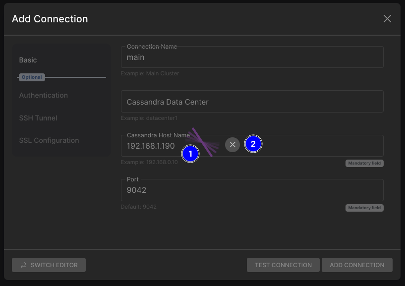
2.3.2.5.1.1.1 Click the
Xbutton #2.- 2.3.2.5.1.1.1.1 The test process has been terminated, a feedback message showed up.
- 2.3.2.5.1.1.1.1
-
2.3.2.5.1.2
On failure, an error showed up with details about the cause of it.
-
2.3.2.5.1.3
On success, the button "ADD CONNECTION" #1 enabled now, and a success message #2 showed up.
-
2.3.2.6 "ADD CONNECTION" button.
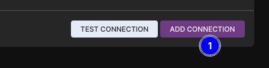
2.3.2.6.1 After finishing the test (#2.3.2.5) with success, button #1 should be enabled, click it.
2.3.2.6.1.1
On success.
-
2.3.2.6.1.1.1
The connection has been added under the current active workspace. -
2.3.2.6.1.1.2
The added connection is ready to be activated - green glowing circle, Cassandra version, and data center are known and provided -.
-
-
2.3.2.6.1.2
On failure, an error showed up with details about the cause of it.
2.3.3 Add a bunch of connections.
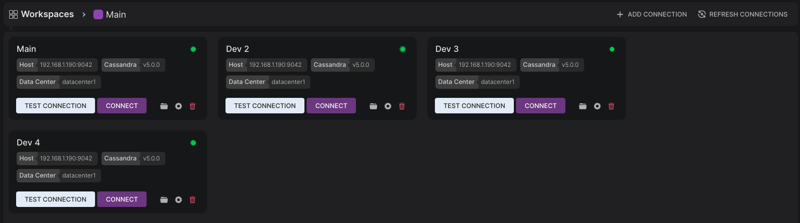
2.3.3.1 After finishing the test (#2.3.2), add about 3-4 connections.
We can add the same connection info - except its name, related to test (#2.3.2.1.1) -.
-
2.3.3.2
All connections have been added with success feedback. -
2.3.3.3
After adding the first connection with success, the view has been changed and the connection has been displayed as a card - as the embedded image under this test (#2.3.3) -. After adding the first connection, you can click the "ADD CONNECTION" button at the top right side of the window 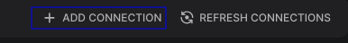.
2.4 Processes Of An Added Connection
2.4.1 "Connection folder" button.
2.4.1.1 Click the button with the folder icon - the first one from the left side -
for any added connection.- 2.4.1.1.1 File explorer opened pointing at the connection's folder.
- 2.4.1.1.1
2.4.2 "Connection settings" button.
2.4.2.1 Click the button with the cog icon - the second one from the left side -
for any added connection.-
2.4.2.1.1
An associated dialog (#2.3.2) showed up. -
2.4.2.1.2
Conditions of adding a connection should be applied in this case too.
-
2.4.5 "Delete connection" button.

2.4.5.1 Click the button with the trash icon - the third one from left side -
for any added connection.- 2.4.5.1.1 A related - confirmation - dialog (#2.4.5) has been displayed.
- 2.4.5.1.1
2.4.5.2 Click the "CANCEL" button #2.
- 2.4.5.2.1 Nothing should happen, the deletion process has been neglected.
- 2.4.5.2.1
2.4.5.3 Click the "CONFIRM" button #3.
- 2.4.5.3.1 The related connection has been deleted and its card has been removed from the UI.
- 2.4.5.3.1
2.4.5.4 Click the button with the trash icon of another connection.
2.4.5.4.1 Check the checkbox #1 then click the "CONFIRM" button #3.
-
2.4.5.4.1.1
The related connection has been deleted and its card has been removed from the UI, in addition, its files have been kept in the system. The connection's folder has been changed by adding a prefix _DEL_{randomString}, exampleMain_DEL_fa4b8.
-
2.4.6 "TEST CONNECTION" button.

2.4.6.1 Click the button #1 of any added connection.
-
2.4.6.1.1
Related to tests (#2.3.2.2.2) and (#2.3.2.3.2), a related dialog would show up.
- 2.4.6.1.1.1 after clicking the button "IGNORE CREDENTIALS" #1, the workbench has considered the connection to be credential-free, and it won't ask about credentials in the next test/connect.
- 2.4.6.1.1.2 When clicking the button "PROCEED" #2 - after providing the necessary credentials -, the test (#2.4.5.2.1) has started.
- 2.4.6.1.1.3 When checkbox #3 is checked then the button "PROCESSED" #2 is clicked. The workbench won't ask about credentials in the next test/connect.
- 2.4.6.1.1.1
-
2.4.6.1.2
Changes happend in the UI - a spinner #1 showed up, and an Xbutton #2 showed up after a short time.
2.4.6.1.2.1 Click the
Xbutton #2.- 2.4.6.1.2.1.1 The test process has been terminated, a feedback message showed up.
- 2.4.6.1.2.1.1
-
2.4.6.1.2
The test process finished with feedback - of success or failure -.
-
2.4.7 "CONNECT" button.
 After finishing the test (#2.4.6) with success, activating the connection will immediately create a work area, otherwise, when clicking the button "CONNECT" it'll automatically test the connection first, then activate it.
After finishing the test (#2.4.6) with success, activating the connection will immediately create a work area, otherwise, when clicking the button "CONNECT" it'll automatically test the connection first, then activate it.2.4.7.1 Click the button #1 of any added connection.
As mentioned in the info card, in case this is the first attempt to connect after adding the connection, or after a successful connection test the workbench will immediately attempt to create a work area.
Otherwise, clicking this button will cause the same behavior in the test (#2.4.6.1), then it'll create a work area.
-
2.4.7.1.1
After a successful connection test - either automatically related to the test (#2.4.6) or manually -, a work area showed up.
2.4.1 Active Connection Workarea

2.4.1.1 "Connection Info Card" #1.
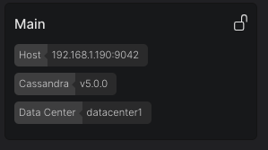
-
2.4.1.1.1
The hostname, Cassandra version, and the data center are correctly provided.
2.4.1.1.2
The lock icon at the top right side of the card  .
.-
2.4.1.1.2.1
In case SSL is not enabled, it's an opened-lock with a tooltip "SSL is not enabled". -
2.4.1.1.2.2
In case SSL is enabled, it's a colored closed-lock with a tooltip "SSL is enabled".
-
-
2.4.1.2 "Metadata Tree View" #2.
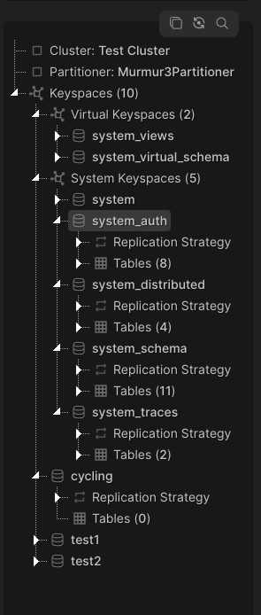
2.4.1.2.1
Info about the connected-to cluster/node.-
2.4.1.2.1.1
Cluster name and the partitioner. -
2.4.1.2.1.2
List of all keyspaces - virtual and system keyspaces are grouped under Virtual Keyspaces (${numberOfVirtualKeyspaces}) and System Keyspaces (${numberOfSystemKeyspaces}) respectively.-
2.4.1.2.1.2.1
All tables inside each keyspace.- 2.4.1.2.1.2.1.1 All associated tables' data like keys, columns, options, triggers if any, and alike.
- 2.4.1.2.1.2.1.1
-
-
2.4.1.2.2 Metadata Tree View Actions.

2.4.1.2.2.1 Click the copy icon #1.
-
2.4.1.2.2.1.1
The entire metadata has been copied to the clipboard as a JSON string, the workbench showed a feedback of success with the size of the copied JSON string.
-
2.4.1.2.2.2 Click the refresh icon #2.

-
2.4.1.2.2.2.1
The loading spinner has been shown again. -
2.4.1.2.2.2.2
All metadata actions were disabled during the refresh process. -
2.4.1.2.2.2.3
The tree view has been rendered again.
-
2.4.1.2.2.2 Click the search icon #3.
2.4.1.2.2.2.1 An input field showed up at the top of the tree view.

2.4.1.2.2.2.1.1 Attempt to search for something, like
frozen.
-
2.4.1.2.2.2.1.1.1
The tree has been filtered. -
2.4.1.2.2.2.1.1.2
The number of search results #1 and the ID of the current result #1 are displayed on the right side of the input field. -
2.4.1.2.2.2.1.1.3
Up and down arrows #2 are displayed on the right side of the input field to navigate between results.- 2.4.1.2.2.2.1.1.3.1 Arrows are navigating as expected through the search results.
- 2.4.1.2.2.2.1.1.3.1
-
2.4.1.2.2.2.1.1.4
Results are highlighted well and distinguishable #3. -
2.4.1.2.2.2.1.1.5
All results are correct - the search string certainly exists in the highlighted nodes - #3. -
2.4.1.2.2.2.1.1.6
Search is case insensitive.
-
2.4.1.2.2.2.1.2 Clear the input field.
- 2.4.1.2.2.2.1.2.1 All nodes are now displayed with no filter.
- 2.4.1.2.2.2.1.2.1
2.4.1.2.2.2.1.3 Click the search icon again and search for something.
2.4.1.2.2.2.1.3.1 Click the search icon again without clearing the field.
- 2.4.1.2.2.2.1.3.1.1 All nodes are now displayed with no filter.
- 2.4.1.2.2.2.1.3.1.1
2.4.1.2.3 Resize the left side of the workarea.
2.4.1.2.3.1 Move the mouse closer to the left edge of the workspace.
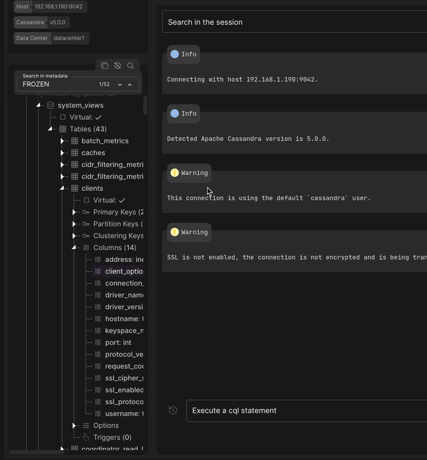
- 2.4.1.2.3.1.1 The left side has been resized as expected.
-
2.4.1.3 "Workarea Sections" #3.
2.4.1.3.1 "CQLSH Session" Section.

#1: In the workarea's different sections, we can navigate to any section via its tab.
#2: The search area in the "CQLSH SESSION" section, here we can search for a specific string in output #3.
#3: The blocks' container, where all output of the current session is shown here as blocks, the block consists of:
#5 The header: Either title or cql statement(s).
#6 The body: The content of the block, either plain text - could be converted from ANSI -, or rendered tables and objects.
#7: Actions: different block's actions like delete, copy, query tracing, download, and more.
#4: Execution area: where we type and execute cql statements or cqlsh commands, and browser statements history.
2.4.1.3.1.1 "Execution Area" #4.

2.4.1.3.1.1.1 Execute simple statement like
tracing on.
2.4.1.3.1.1.1.1 Focus on the input field in the execution area.
2.4.1.3.1.1.1.2 Start typing
tletter.- 2.4.1.3.1.1.1.2.1 Suggestions feature has been started.
- 2.4.1.3.1.1.1.2.1
2.4.1.3.1.1.1.3 Type
trletters:- 2.4.1.3.1.1.1.3.1
truncateword is suggested by the workbench to be auto-typed.
- 2.4.1.3.1.1.1.3.1
2.4.1.3.1.1.1.4 Click
TAB.-
2.4.1.3.1.1.1.4.1
The word truncatehas been auto-typed.
2.4.1.3.1.1.1.4.2 Click
TABkey again.- 2.4.1.3.1.1.1.4.2.1 The word
tracinghas been auto-typed.
- 2.4.1.3.1.1.1.4.2.1
-
2.4.1.3.1.1.1.5 Click
TABkey multiple times.- 2.4.1.3.1.1.1.5.1 The workbench cycled throw the two suggestions.
- 2.4.1.3.1.1.1.5.1
You can click the suggestion to auto-typed it.
2.4.1.3.1.1.1.6 Continue with typing
tracing on, now either click the "ENTER" key, or the execution button at the right side of the area.
-
2.4.1.3.1.1.1.6.1
The statement has been executed and the input field has been cleared #3. -
2.4.1.3.1.1.1.6.3
A new block showed up at the bottom of the blocks' container #1.-
2.4.1.3.1.1.1.6.3.1
The statement is syntax highlighted.
2.4.1.3.1.1.1.6.3.2 Hover the mouse closer to the block's statement.

- 2.4.1.3.1.1.1.6.3.2.1 A copy icon showed up at the bottom right side of the statement.
- 2.4.1.3.1.1.1.6.3.2.1.1 Click the icon.
- 2.4.1.3.1.1.1.6.3.2.1.1.1 The statement has been copied to the clipboard.
- 2.4.1.3.1.1.1.6.3.2.1.1 Click the icon.
- 2.4.1.3.1.1.1.6.3.2.1 A copy icon showed up at the bottom right side of the statement.
-
-
2.4.1.3.1.1.1.6.4
The history button at the left side of the input field has been enabled #2.
-
2.4.1.3.1.1.2 Execute statement with records like
select * from system_views.clients;.
2.4.1.3.1.1.2.1 Type the statement
select * from system_views.clients.-
2.4.1.3.1.1.2.1.1
Without typing a semicolon at the end ;, the execution button is still disabled and we can't execute the statement. The workbench detects which statements need a semicolon and which don't.
2.4.1.3.1.1.2.1.2 Type
;at the end and execute the statement.-
2.4.1.3.1.1.2.1.2.1
The statement has been executed and the input field has been cleared. -
2.4.1.3.1.1.2.1.2.2
The statement is syntax highlighted #1. -
2.4.1.3.1.1.2.1.2.3
A new block showed up at the bottom of the blocks' container.-
2.4.1.3.1.1.2.1.2.3.1
The workbench automatically scrolled to the bottom of the container. -
2.4.1.3.1.1.2.1.2.3.2
Inside the block a table has been rendered containing the related table's columns and records #2.-
2.4.1.3.1.1.2.1.2.3.2.1
By typing inside the text fields of any column, records have been filtered #3. -
2.4.1.3.1.1.2.1.2.3.2.2
The order of the columns has been changed by dragging and dropping them. -
2.4.1.3.1.1.2.1.2.3.2.3
The order of records has been changed by clicking the right side arrow inside headers #4  .
.
2.4.1.3.1.1.2.1.2.3.2.4 Click the download icon at the bottom right of the container #5.

-
2.4.1.3.1.1.2.1.2.3.2.4.1
Two options showed up to download the table as either CSV or PDF formats #5.
2.4.1.3.1.1.2.1.2.3.2.4.2 Download the rendered table in both formats.
- 2.4.1.3.1.1.2.1.2.3.2.4.2.1 Both formats are fine and incorrupted.
- 2.4.1.3.1.1.2.1.2.3.2.4.2.1
-
-
2.4.1.3.1.1.2.1.2.3.3 "Query Tracing" feature.
2.4.1.3.1.1.2.1.2.3.3.1 Click the tracing icon at the bottom right of the container #6.

-
2.4.1.3.1.1.2.1.2.3.3.2
Tab "Query Tracing" is now the active one, the section has been changed to query tracing results.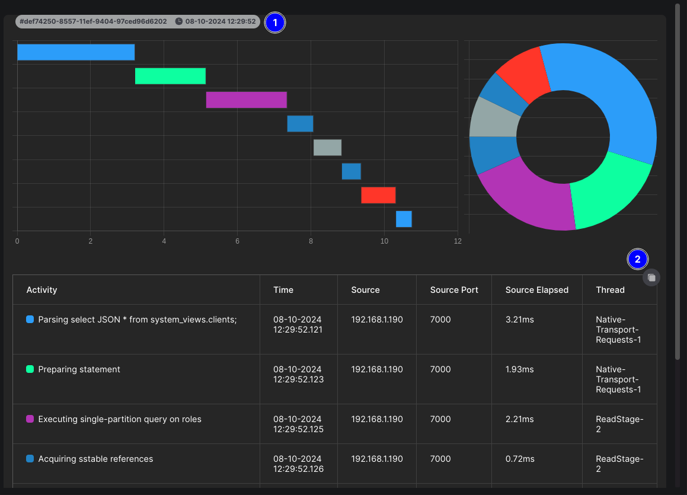
-
2.4.1.3.1.1.2.1.2.3.3.3
The tracing results of the statement/query select * from system_views.clients;are showed up.2.4.1.3.1.1.2.1.2.3.3.3.1 Click the header badge at the top left side of the block #1.
-
2.4.1.3.1.1.2.1.2.3.3.3.1.1
The view has been minimized to charts only.
2.4.1.3.1.1.2.1.2.3.3.3.1.2 Click the header badge again #1.
- 2.4.1.3.1.1.2.1.2.3.3.3.1.2.1 The view has been reverted to its normal state again.
- 2.4.1.3.1.1.2.1.2.3.3.3.1.2.1
-
2.4.1.3.1.1.2.1.2.3.3.3.2 Click the copy button at the top right side of the activities table #2.
- 2.4.1.3.1.1.2.1.2.3.3.3.2.1 The table has been copied to the clipboard in JSON string format.
- 2.4.1.3.1.1.2.1.2.3.3.3.2.1
-
-
-
2.4.1.3.1.1.3 Execute bunch of statements with different cases.
2.4.1.3.1.1.3.1 Execute two statements in one action like
SELECT * FROM system_schema.keyspaces; select * from system_views.clients;.
Statements can be executed line by line instead of one line - make sure to click SHIFT+ENTER to add a new line in the input field -, like:
SELECT * FROM system_schema.keyspaces; select * from system_views.clients;-
2.4.1.3.1.1.3.1.1
Both statements have been executed, and a new block showed up with two outputs #1. -
2.4.1.3.1.1.3.1.2
A new right-side badge showed up with "2 statements" phrase #2.
-
2.4.1.3.1.1.3.2 Execute three statements in one action like
SELECT * FROM system_schema.keyspaces; select * from system.peers; select * from system_views.clients;.
-
2.4.1.3.1.1.3.2.1
The three statements have been executed, and a new block showed up with three outputs #1. -
2.4.1.3.1.1.3.2.2
The output of the second statement select * from system.peers;is "CQL statement executed - No data found" #2. -
2.4.1.3.1.1.3.2.3
A new right-side badge showed up with "3 statements" phrase #3.
-
2.4.1.3.1.1.3.3 Execute an invalid statement that would interrupt the execution flow like
not_valid';.
-
2.4.1.3.1.1.3.3.1
The statement has been executed, and a new block showed up. -
2.4.1.3.1.1.3.3.2
After a short time, an Xbutton #1 showed up with pinned tooltip #2 about an interruption of the execution flow.-
2.4.1.3.1.1.3.3.2.1
Without clicking the button #1, there's no way to run further statements or interact freely in the enhanced terminal. -
2.4.1.3.1.1.3.3.2.2
After clicking the button #1, the infinite loader was removed from the block, and an info message showed up, and the interruption has been handled.
-
-
2.4.1.3.1.1.3.4 Execute three statements in one action and one of them is invalid.
2.4.1.3.1.1.3.4.1 Execute all of them in one line like
SELECT * FROM system_schema.keyspaces; invalid'; select * from system.peers;.- 2.4.1.3.1.1.3.4.1.1 None of them have been executed, the entire execution process has been considered to be invalid.
- 2.4.1.3.1.1.3.4.1.1
2.4.1.3.1.1.3.4.2 Execute them and put each one in line like:
SELECT * FROM system_schema.keyspaces; invalid'; select * from system.peers;- 2.4.1.3.1.1.3.4.2.1 The first and second statements have been executed, and then the execution flow stopped.
- 2.4.1.3.1.1.3.4.2.1.1 After clicking the
Xbutton the info message showed up at the bottom of the block.
- 2.4.1.3.1.1.3.4.2.1.1
- 2.4.1.3.1.1.3.4.2.1
2.4.1.3.1.1.3.4.3 Change the order of the statements by putting the invalid statement first, like:
invalid'; SELECT * FROM system_schema.keyspaces; select * from- 2.4.1.3.1.1.3.4.3.1 The first one has been executed, and then the entire execution process has been considered to be invalid.
- 2.4.1.3.1.1.3.4.3.1
2.4.1.3.1.1.3.4.4 Change the order of the statements again by putting the invalid statement at last, like:
SELECT * FROM system_schema.keyspaces; select * from invalid';-
2.4.1.3.1.1.3.4.5
All of them have been executed, and then the execution flow stopped.- 2.4.1.3.1.1.3.4.5.1 After clicking the
Xbutton the info message showed up at the bottom of the block.
- 2.4.1.3.1.1.3.4.5.1
-
"Invalid" description in Cassandra context refers to different states, here, however, it refers to a statement that causes the execution flow to be stopped while waiting for interaction from the user, in cqlsh tool those kind of statements causes this:

This is different from an "invalid" statement that might return an error like attempting to select from a table that doesn't exist, in this case, the execution flow won't be interrupted, and actually, if we executed
invalid;without the single quote then this statement would be considered to be invalid but won't cause an execution flow interruption. The behavior of executing statements while there's an invalid input is different on Windows from Linux and macOS; mostly, on Windows the execution flow will be interrupted regardless of the position or order of the invalid statement, in other words, if we have multiple statements and one of them is invalid, none of them would be executed, and it doesn't matter its order.- 2.4.1.3.1.1.3.5 Windows users only: The mentioned behavior is confirmed.
2.4.1.3.1.1.4 Create new keyspace and table.
2.4.1.3.1.1.4.1 Create a new keyspace statement like
CREATE KEYSPACE test1 WITH replication = {'class': 'SimpleStrategy', 'replication_factor': '1'} AND durable_writes = true;.-
2.4.1.3.1.1.4.1.1
A new block showed up at the bottom of the container with the output "CQL statement executed". -
2.4.1.3.1.1.4.1.2
The metadata tree view has been refreshed automatically.- 2.4.1.3.1.1.4.1.2.1 The created keyspace
test1exists in the tree view.
- 2.4.1.3.1.1.4.1.2.1
2.4.1.3.1.1.4.1.3 Re-execute the same statement.
-
2.4.1.3.1.1.4.1.3.1
A new block showed up with error the output "AlreadyExists: Keyspace 'test1' already exists". -
2.4.1.3.1.1.4.1.3.2
The tree view hasn't been refreshed this time. The workbench automatically detects when the metadata should be refreshed and when it's not.
-
-
2.4.1.3.1.1.4.2 Create new table statement like
CREATE TABLE test1.test_table (id timeuuid PRIMARY KEY, num int);.-
2.4.1.3.1.1.4.2.1
A new block showed up at the bottom of the container with the output "CQL statement executed". -
2.4.1.3.1.1.4.2.2
The metadata tree view has been refreshed automatically.- 2.4.1.3.1.1.4.2.2.1 The created table
test_tablein keyspacetest1exists in the tree view.
- 2.4.1.3.1.1.4.2.2.1
2.4.1.3.1.1.4.2.3 Re-execute the same statement.
-
2.4.1.3.1.1.4.2.3.1
A new block showed up with error the output "AlreadyExists: Table 'test1.test_table' already exists". -
2.4.1.3.1.1.4.2.3.2
The tree view hasn't been refreshed this time.
-
-
2.4.1.3.1.1.5 History Statements.
All executed statements are being saved in the workbench's local storage, each connection has its own space of storage and a 50 saved statements at max - group of statements executed in one action are considered as one statement -.2.4.1.3.1.1.5.1 Click the history icon at the left side of the execution area.
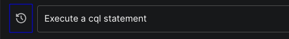
2.4.1.3.1.1.5.1.1 A list showed up contains statements that have been executed.
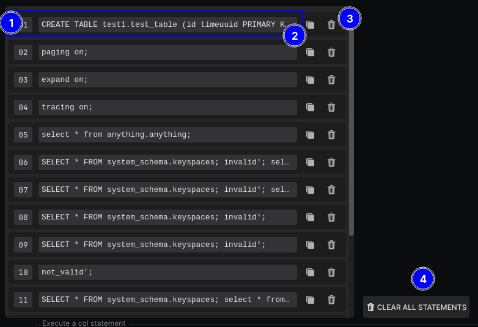
2.4.1.3.1.1.5.1.1.1 Click area #1, or area #2 and #3 around the icons - the background color will be changed indicating a possible click -.

-
2.4.1.3.1.1.5.1.1.1.1
The statement has been filled in the input text automatically. -
2.4.1.3.1.1.5.1.1.1.2
The list has been closed automatically.
-
2.4.1.3.1.1.5.1.1.2 Open the list again, and click the copy icon #2 for any statement
 .
.-
2.4.1.3.1.1.5.1.1.2.1
The statement has been copied to the clipboard. -
2.4.1.3.1.1.5.1.1.2.2
The list hasn't been closed, it's still displayed.
-
2.4.1.3.1.1.5.1.1.3 Click the trash icon #3 for any statement 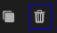.
- 2.4.1.3.1.1.5.1.1.3.1 The statement has been deleted from the list.
- 2.4.1.3.1.1.5.1.1.3.1
2.4.1.3.1.1.5.1.1.4 Click the button #4 at the bottom right side of the list.
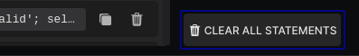
-
2.4.1.3.1.1.5.1.1.4.1
The list has been closed as all statements have been deleted. -
2.4.1.3.1.1.5.1.1.4.2
The history icon has been disabled.
-
2.4.1.3.1.1.5.1.1.5 Execute any statement like
expand on.- 2.4.1.3.1.1.5.1.1.5.1 The history icon has been enabled again.
- 2.4.1.3.1.1.5.1.1.5.1
2.4.1.3.1.2 "Blocks Search Area" #2.

2.4.1.3.1.2.1 Click or focus on the search input field #1.
2.4.1.3.1.2.1.1 Type something to search for in the blocks, like
tracing.-
2.4.1.3.1.2.1.1.1
Blocks have been filtered with success.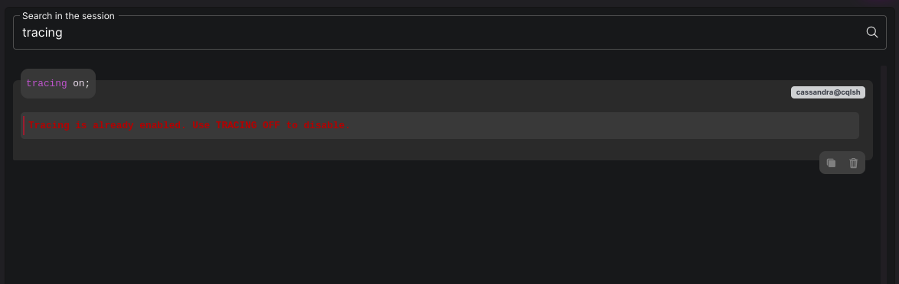
-
2.4.1.3.1.2.1.2 Clear the text inside the input field.
- 2.4.1.3.1.2.1.2.1 All blocks are visible again.
- 2.4.1.3.1.2.1.2.1
The workbench searches in the block's header - statement -, badges, and all output, so we can search for anything related to the block.2.4.1.3.1.3 "Blocks Container" #3.
 Most actions and processes of this area of the CQLSH session have been tested within the test (#2.4.1.3.1.1), in this test we'll attempt to cover the general, unrelated remaining actions and processes.
Most actions and processes of this area of the CQLSH session have been tested within the test (#2.4.1.3.1.1), in this test we'll attempt to cover the general, unrelated remaining actions and processes.2.4.1.3.1.3.1 Copy block.
2.4.1.3.1.3.1.1 Click the copy icon #1 of any created block
 .
.- 2.4.1.3.1.3.1.1.1 The output has been copied to the clipboard in JSON string format.
- 2.4.1.3.1.3.1.1.1
2.4.1.3.1.3.2 Delete block.
2.4.1.3.1.3.2.1 Click the trash icon #2 of any created block 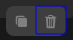.
- 2.4.1.3.1.3.2.1.1 The block has been deleted.
- 2.4.1.3.1.3.2.1.1
2.4.1.3.1.3.2.2 Delete all created block.
-
2.4.1.3.1.3.2.2.1
The blocks' container is empty now and there's an icon with message indicates that.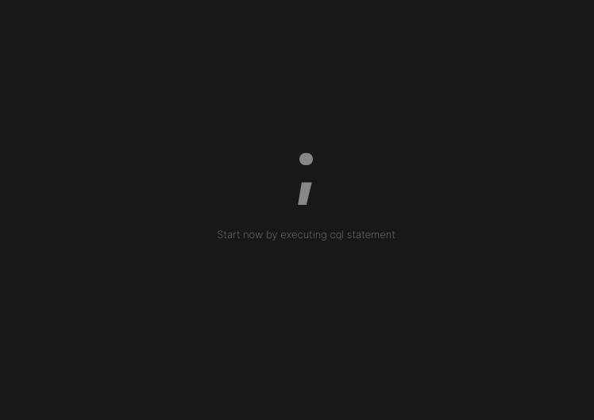
-
2.4.1.3.2 "CQL Description" Section.

2.4.1.3.2.1 Click the tab #1.
- 2.4.1.3.2.1.1 A new section has been shown instead of the CQLSH session (#2.4.1.3.1), the section is empty, with endless animated element #2 and a clear hint #3 at the bottom.
- 2.4.1.3.2.1.1
2.4.1.3.2.2 Back to the metadata tree view (#2.4.1.2).

2.4.1.3.2.2.1 Right mouse click at nodes like the entire cluster, any keyspace, table, and index. For example, right-click the
Cluster: {Name}node.-
2.4.1.3.2.2.1.1
A right-click context menu showed up.2.4.1.3.2.2.1.1.1 Click the menu's item
Get CQL Description.-
2.4.1.3.2.2.1.1.1.1
A spinner showed up at the left side of the node. -
2.4.1.3.2.2.1.1.1.2
An editor showed up in the CQL Descriptionsection with thecqldescription of the entire cluster.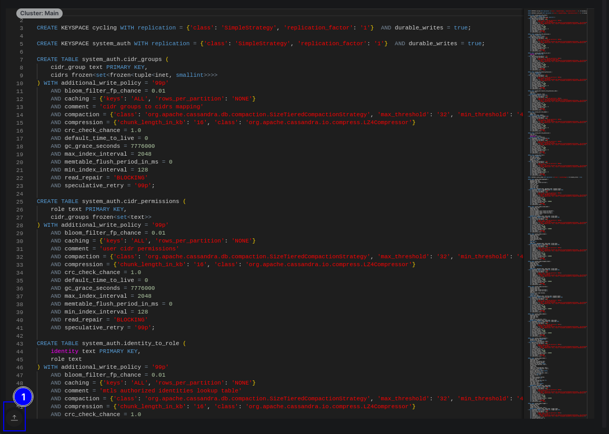
2.4.1.3.2.2.1.1.1.2.1 Click the
Expand Editorbutton #1.- 2.4.1.3.2.2.1.1.1.2.1.1 The editor shrank and took nearly half of the section's view.
- 2.4.1.3.2.2.1.1.1.2.1.1
2.4.1.3.2.2.1.1.1.2.1.2 Click the button #1 again.
- 2.4.1.3.2.2.1.1.1.2.1.2.1 The editor reverted to its previous height.
- 2.4.1.3.2.2.1.1.1.2.1.2.1
2.4.1.3.2.2.1.1.1.2.1.3 Now back to the "CQLSH Session" section (#2.4.1.3.1).
-
-
2.4.1.3.2.2.2 Expand the
Keyspaces (${numOfKeyspaces})node.
2.4.1.3.2.2.2.1 Right mouse click at any keyspace - you might need to expand either the
Virtual Keyspacesor theSystem Keyspacesnode -.-
2.4.1.3.2.2.2.1.1
A spinner showed up at the left side of the node. -
2.4.1.3.2.2.2.1.2
The workbench automatically navigated to the "CQL Description" section.
-
2.4.1.3.2.2.2.2 Expand any keyspace like
systemkeyspace under theSystem Keyspacesnode.2.4.1.3.2.2.2.2.1 Expand its
Table (${numOfTables})node.2.4.1.3.2.2.2.2.1.1 Attempt to right click and get the CQL description of multiple tables at the same time.
- 2.4.1.3.2.2.2.2.1.1.1 The cql description of all tables has been successfully fetched and rendered.
- 2.4.1.3.2.2.2.2.1.1.1
2.4.1.3.2 "Query Tracing" Section.
- 2.4.1.3.2.1 This section's processes have been tested under the test (#2.4.1.3.1.1.2.1.2.3.3), confirm if it has been passed with its sub-tests.
- 2.4.1.3.2.1
2.4.1.3.3 "Scheme Diff" Section.

2.4.1.3.3.1 Click the tab #1.
- 2.4.1.3.3.1.1 A new section has been shown, two editors with metadata content - JSON string format - in both.
- 2.4.1.3.3.1.1
2.4.1.3.3.2 Back to the "CQLSH Session" section (#2.4.1.3.1).
2.4.1.3.3.2.1 Create a new keyspace statement like
CREATE KEYSPACE test2 WITH replication = {'class': 'SimpleStrategy', 'replication_factor': '1'} AND durable_writes = true;.2.4.1.3.3.2.1.1 Back to the "Scheme Diff" section (#2.4.1.3.3).
2.4.1.3.3.2.1.1.1 At the bottom center of the section, click the refresh icon #2
 .
.-
2.4.1.3.3.2.1.1.1.1
The icon has been animated.
2.4.1.3.3.2.1.1.1.2
Changes occurred in the section.-
2.4.1.3.3.2.1.1.1.2.1
The badge #3 has been updated from 0to1 .
. -
2.4.1.3.3.2.1.1.1.2.2
Changes navigation arrows are enabled.
2.4.1.3.3.2.1.1.1.2.1.1 Click the badge #3
.
-
2.4.1.3.3.2.1.1.1.2.1.1.1
List showed up with one change - both the start line of the change and its content are clear -.2.4.1.3.3.2.1.1.1.2.1.1.1.1 Click that change - the entire line of change is clickable -.
-
2.4.1.3.3.2.1.1.1.2.1.1.1.1.1
Both editors scrolled down automatically to the the target line. -
2.4.1.3.3.2.1.1.1.2.1.1.1.1.2
The difference between the versions of the metadata is clear.
-
-
2.4.1.3.3.2.1.1.1.2.1.2 Click the badge again.
- 2.4.1.3.3.2.1.1.1.2.1.2.1 The list has been closed.
- 2.4.1.3.3.2.1.1.1.2.1.2.1
-
-
2.4.1.3.3.3 "Scheme Snapshots".

2.4.1.3.3.3.1 Save a snapshot.

2.4.1.3.3.3.1.1 Click the disk icon #1 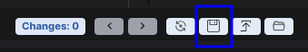.
-
2.4.1.3.3.3.1.1.1
A related mini dialog showed up at the bottom of the window - as shown in the embedded GIF image -.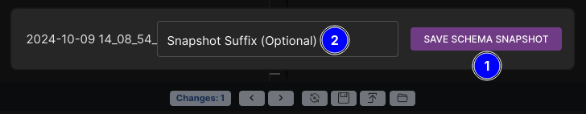
2.4.1.3.3.3.1.1.1.1 Click the button #1 without adding a suffix #2.
- 2.4.1.3.3.3.1.1.1.1.1 The snapshot has been saved - a success feedback message showed up -.
- 2.4.1.3.3.3.1.1.1.1.1
2.4.1.3.3.3.1.1.2 Click the icon #1 again .
2.4.1.3.3.3.1.1.2.1 Save the snapshot with any suffix.
- 2.4.1.3.3.3.1.1.2.1.1 The snapshot has been saved - a success feedback message showed up -.
- 2.4.1.3.3.3.1.1.2.1.1
-
2.4.1.3.3.3.2 List and load saved snapshots.
2.4.1.3.3.3.2.1 Click the load icon #2
 .
.-
2.4.1.3.3.3.2.1.1
A related dialog showed up at the top of the window.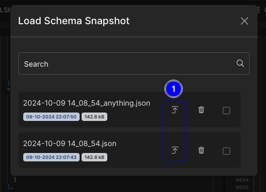
-
2.4.1.3.3.3.2.1.1.1
There are two snapshots; the newest one with the suffix is the first one in the list from top.2.4.1.3.3.3.2.1.1.1.1 Click the load icon #1 for any of the saved snapshots.

-
2.4.1.3.3.3.2.1.1.1.1.1
The dialog has been closed automatically. -
2.4.1.3.3.3.2.1.1.1.1.2
The saved snapshot has been loaded in the "previous" left editor #1. -
2.4.1.3.3.3.2.1.1.1.1.3
Diff check has been automatically triggered, no changes have been detected now #2.
-
-
-
2.4.1.3.3.3.2.2 Click the load icon #2
again.
-
2.4.1.3.3.3.2.2.1
The related dialog showed up again at the top of the window.
2.4.1.3.3.3.2.2.2 Click the trash icon for any of the saved snapshots.

2.4.1.3.3.3.2.2.2.1 Click the "CANCEL" button #1.
- 2.4.1.3.3.3.2.2.2.1.1 Nothing should happen, the deletion process has been neglected.
- 2.4.1.3.3.3.2.2.2.1.1
2.4.1.3.3.3.2.2.2.2 Click the trash icon again.
2.4.1.3.3.3.2.2.2.2.1 Check the checkbox #2 and click the "CONFIRM" button #3.
-
2.4.1.3.3.3.2.2.2.2.1.1
The snapshot has been deleted.-
2.4.1.3.3.3.2.2.2.2.1.1.1
A success message showed up. -
2.4.1.3.3.3.2.2.2.2.1.1.2
The snapshot has been deleted from the list.
-
-
-
2.4.1.3.3.3.3 Open saved snapshots folder.
2.4.1.3.3.3.3.1 Click the folder icon #3
 .
.-
2.4.1.3.3.3.3.1.1
File explorer opened pointing at the save snapshots' folder for the current connection.-
2.4.1.3.3.3.3.1.1.1
There are two snapshots, one of them is the deleted one with suffix _DEL_{randomString}. As we checked to keep the associated files in the system, the snapshot file has been kept in the folder.
-
-
2.4.1.3.3.3.4 Further tests for snapshots.
2.4.1.3.3.3.4.1 Create a new table in the added keyspace
test2.2.4.1.3.3.3.4.1.1 From the metadata tree view (#2.4.1.2), look for the keyspace
test1, tabletest_tableshould be underTablesnode of the keyspace based on the test (#2.4.1.3.1.1.4.2).
2.4.1.3.3.3.4.1.1.1 Right mouse click on the table
test_table, and get its cql description (#2.4.1.3.2).-
2.4.1.3.3.3.4.1.1.1.1
The workbench automatically navigated to the "CQL Description" Section (#2.4.1.3.2).
2.4.1.3.3.3.4.1.1.1.2 Copy the description to be used later on.
-
2.4.1.3.3.3.4.1.1.2 Back to the "CQLSH Session" section (#2.4.1.3.1).
2.4.1.3.3.3.4.1.1.2.1 Paste the description in the execution input field, and execute it.
- 2.4.1.3.3.3.4.1.1.2.1.1 An error showed like "AlreadyExists: Table 'test1.test_table' already exists".
- 2.4.1.3.3.3.4.1.1.2.1.1
2.4.1.3.3.3.4.1.1.2.2 Click the history icon (#2.4.1.3.1.1.5.1)
 .
.- 2.4.1.3.3.3.4.1.1.2.2.1 Click the statement to be filled in the execution input field.
- 2.4.1.3.3.3.4.1.1.2.2.1.1 The statement has been filled in the field.
- 2.4.1.3.3.3.4.1.1.2.2.1.1
- 2.4.1.3.3.3.4.1.1.2.2.2 Change keyspace
test1totest2, and execute the statement again.- 2.4.1.3.3.3.4.1.1.2.2.2.1 The output is like "CQL statement executed".
- 2.4.1.3.3.3.4.1.1.2.2.2.1
- 2.4.1.3.3.3.4.1.1.2.2.1 Click the statement to be filled in the execution input field.
2.4.1.3.3.3.4.1.1.3 Back to the "Scheme Diff" section (#2.4.1.3.3).
2.4.1.3.3.3.4.1.1.3.1 Click the refresh icon
 .
.-
2.4.1.3.3.3.4.1.1.3.1.1
The new change has been detected.
2.4.1.3.3.3.4.1.1.3.1.2 Click the disk icon again and save the new snapshot.
- 2.4.1.3.3.3.4.1.1.3.1.2.1 The new snapshot has been saved.
- 2.4.1.3.3.3.4.1.1.3.1.2.1
-
2.4.1.3.3.3.4.1.1.3.2 Click the load icon
again.
2.4.1.3.3.3.4.1.1.3.2.1 Check the checkboxes of all saved snapshots #1.
- 2.4.1.3.3.3.4.1.1.3.2.1.1 New buttons showed up #2 and #3.
- 2.4.1.3.3.3.4.1.1.3.2.1.1
2.4.1.3.3.3.4.1.1.3.2.2 Click the button "Toggle Selections" #2.
- 2.4.1.3.3.3.4.1.1.3.2.2.1 Checkboxes check state has been toggled.
- 2.4.1.3.3.3.4.1.1.3.2.2.1
2.4.1.3.3.3.4.1.1.3.2.2.1 Check the checkboxes again #1.
2.4.1.3.3.3.4.1.1.3.2.2.1.1 Click the button "Delete Selected Snapshots" #3.
-
2.4.1.3.3.3.4.1.1.3.2.2.1.1.1
A confirmation dialog showed up.
- 2.4.1.3.3.3.4.1.1.3.2.2.1.1.1.1 Click the "CANCEL" button #1.
- 2.4.1.3.3.3.4.1.1.3.2.2.1.1.1.1.1 Nothing should happen, the deletion process has been neglected.
- 2.4.1.3.3.3.4.1.1.3.2.2.1.1.1.1.1
- 2.4.1.3.3.3.4.1.1.3.2.2.1.1.1.2 Click the button #3 again.
- 2.4.1.3.3.3.4.1.1.3.2.2.1.1.1.2.1 Check the checkbox #2 then click the "CONFIRM" button #3.
- 2.4.1.3.3.3.4.1.1.3.2.2.1.1.1.2.1.1 Snapshots have been deleted with success - feedback showed up -.
- 2.4.1.3.3.3.4.1.1.3.2.2.1.1.1.2.1.1
- 2.4.1.3.3.3.4.1.1.3.2.2.1.1.1.2.1 Check the checkbox #2 then click the "CONFIRM" button #3.
- 2.4.1.3.3.3.4.1.1.3.2.2.1.1.1.1 Click the "CANCEL" button #1.
-
2.4.1.3.3.3.4.1.1.3.3 Click the load icon
again.
- 2.4.1.3.3.3.4.1.1.3.3.1 Warning feedback showed up saying that there are no saved snapshots.
- 2.4.1.3.3.3.4.1.1.3.3.1
2.4.1.3.3.3.4.1.1.3.4 Click the folder icon
 .
.-
2.4.1.3.3.3.4.1.1.3.4.1
File explorer opened pointing at the save snapshots' folder for the current connection.- 2.4.1.3.3.3.4.1.1.3.4.1.1 Deleted snapshots are still present in the system with suffix
_DEL_{randomString}.
- 2.4.1.3.3.3.4.1.1.3.4.1.1
-
2.4.1.3.4 "Close Workarea".

There are many ways to close the active workarea and deactivate the connection.
One is the close button
Xin the connection's work area (#2.4.1.3) #1.Two by right mouse click the connection's switcher in the left panel and choose to close the work area - there are many upcoming tests for this part of the workbench -.
Three is by choosing to close all active work areas at once #3.
Four is by clicking the "DISCONNECT" button in the connection's card.

Under this test, the process will about the
Xbutton #1.
2.4.1.3.4.1 In the connection's work area (#2.4.1.3), click the close button
Xat the top right side of the work area.
-
2.4.1.3.4.1.1
The work area has been closed. -
2.4.1.3.4.1.2
The workbench automatically navigated to the connection's related workspace.
-
2.5 Addtional Features
2.5.1 "Local Clusters" feature.
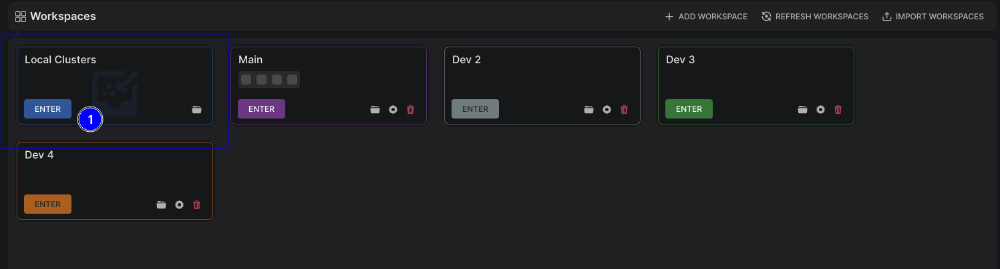
2.5.1.1 Click the "ENTER" button #1.
-
2.5.1.1.1
The view has been changed.
2.5.1.1.1.1 Click the "ADD LOCAL CLUSTER" button #1, or the "+" button at the center of the window #2, or the "ADD CLUSTER" button #3 at the top right side of the window.
2.5.1.1.1.1.1 A related dialog (#2.5.1.2) has been displayed after clicking the "ADD CONNECTION" button of both #1, or #3.
-
2.5.1.1.1.1.2 Same behavior for the "+" button.
-
2.5.1.2 Add Local Cluster Dialog.

2.5.1.2.1 Input fields, and Buttons.
2.5.1.2.1.1 "Local Cluster Name" text field (optional).
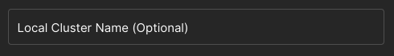
-
2.5.1.2.1.1.1
This field can be left empty - it's optional -. -
2.5.1.2.1.1.2
This field doesn't have restrictions regarding its value - no restrictions for the name of the local cluster -.
-
2.5.1.2.1.2 "Apache Cassandra Version" select field.
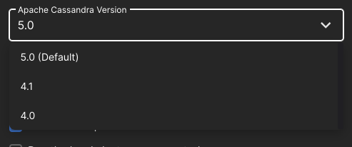
-
2.5.1.2.1.2.1
The default version is v5.0.
2.5.1.2.1.2.2 Click the field.
-
2.5.1.2.1.2.2.1
A dropdown list menu showed up.2.5.1.2.1.2.2.1.1 Click different versions (
v4.1andv4.0).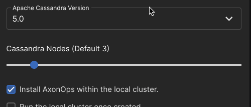"
- 2.5.1.2.1.2.2.1.1.1 The clicked versions have been selected.
- 2.5.1.2.1.2.2.1.1.1
-
-
2.5.1.2.1.3 "Cassandra Nodes" range field.
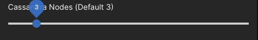
-
2.5.1.2.1.3.1
The default number of nodes is 3.
2.5.1.2.1.3.2 Click and drag from left to right.

-
2.5.1.2.1.3.2.1
Minimum number of nodes is 1. -
2.5.1.2.1.3.2.2
Maximum number of nodes is 20. -
2.5.1.2.1.3.2.3
The tooltip shows the correct selected number of nodes  .
.
-
-
2.5.1.2.1.4 "Install AxonOps" checkbox field.
- 2.5.1.2.1.4.1 This checkbox is checked by default.
- 2.5.1.2.1.4.1
2.5.1.2.1.5 "Run cluster once created" checkbox field.
- 2.5.1.2.1.5.1 This checkbox is unchecked by default.
- 2.5.1.2.1.5.1
2.5.1.2.1.6 "CREATE LOCAL CLUSTER" button.
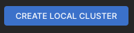
2.5.1.2.1.6.1 Add a bunch of local clusters.
2.5.1.2.1.6.1.1 Create a local cluster without a name, Cassandra version is v5.0, the number of nodes is 2, AxonOps would be installed, and it won't run once it's created, after that click the button "CREATE LOCAL CLUSTER".
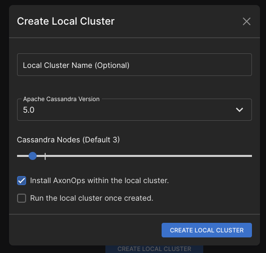
- 2.5.1.2.1.6.1.1.1 The view has been changed, the created local cluster has been displayed as a card with info
[Host: 127.0.0.1:{randomPort}, Cassandra: v5.0, Nodes: 2, AxonOps: ].
After adding the first local cluster, you can click the "ADD CLUSTER" button at the top right side of the window  .
.- 2.5.1.2.1.6.1.1.1
2.5.1.2.1.6.1.2 Create a local cluster with a name, Cassandra version is v4.1, the number of nodes is 3, AxonOps wouldn't be installed, and it won't run once it's created.
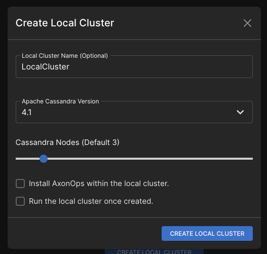
- 2.5.1.2.1.6.1.2.1 The list should be refreshed, a local cluster showed up with info:
[Host: 127.0.0.1:{randomPort}, Cassandra: v4.1, Nodes: 3, AxonOps: ].
- 2.5.1.2.1.6.1.2.1
2.5.1.2.1.6.1.3 Create a local cluster without a name, Cassandra version is v4.0, the number of nodes is 1, AxonOps would be installed, and it will run once it's created.

-
2.5.1.2.1.6.1.3.1
The list should be refreshed, a local cluster showed up with info: [Host: 127.0.0.1:{randomPort}, Cassandra: v4.0 Nodes: 1, AxonOps: ]. -
2.5.1.2.1.6.1.3.2
This local cluster has been automatically started.
-
2.5.1.2.1.6.1.3.2.1
A pinned toast showed up at the bottom left side of the window.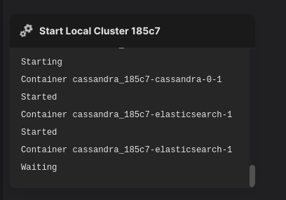
- 2.5.1.2.1.6.1.3.2.1.1 The pinned toast is showing the starting/up progress as expected (images downloading if any, started/waiting status of containers).
- 2.5.1.2.1.6.1.3.2.1.1
-
2.5.1.2.1.6.1.3.2.2
Once the starting process is finished, a work area has been created and automatically navigated to.-
2.5.1.2.1.6.1.3.2.2.1
The workarea looks the same as a workarea of a connection, with the addition of: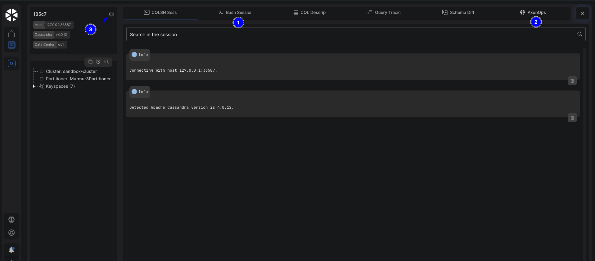
-
2.5.1.2.1.6.1.3.2.2.1.1
"Bash Session" #1 (#2.5.1.3.1) and "AxonOps" #2 (#2.5.1.3.2) sections. -
2.5.1.2.1.6.1.3.2.2.1.2
In the work area's info card - at the top left of the work area -, a globe icon #3 is shown instead of the lock - which indicates if SSL is enabled or not - in the top right side of the card.
-
-
-
-
2.5.1.3 Local Cluster Workarea.
2.5.1.3.1 "Bash Session" section.
2.5.1.3.1.1 Click the "Bash Session" tab #1.
-
2.5.1.3.1.1.1
The section has been changed in the workarea to a terminal.-
2.5.1.3.1.1.1.1
The prompt is root@cassandra-0:/#and it's pointing at the root directory/. -
2.5.1.3.1.1.1.2
There's an ability to interact freely with the Bash instance via the UI terminal except for a set of restrictions.-
2.5.1.3.1.1.1.2.1
Set restrictions:2.5.1.3.1.1.1.2.1.1 CTRL+D shortcut is disabled - to prevent the ability to terminate the session -.
-
2.5.1.3.1.1.1.2.1.2
There's no way to execute the exitcommand.
-
-
-
2.5.1.3.1.2
Extra tests.2.5.1.3.1.2.1 Execute the commands
ls,whoamiandnodetool info.
- 2.5.1.3.1.2.1.1 All commands have been executed with success.
- 2.5.1.3.1.2.1.1
-
2.5.1.3.1.2.2 Press shortcuts like CTRL with keys A, E, W, andU.
- 2.5.1.3.1.2.2.1 Common Bash shortcuts are working as expected.
- 2.5.1.3.1.2.2.1
2.5.1.3.2 "AxonOps" section.
2.5.1.3.2.1 Click the "AxonOps" tab #2.
-
2.5.1.3.2.1.1
The section has been changed in the workarea to the AxonOps dashboard.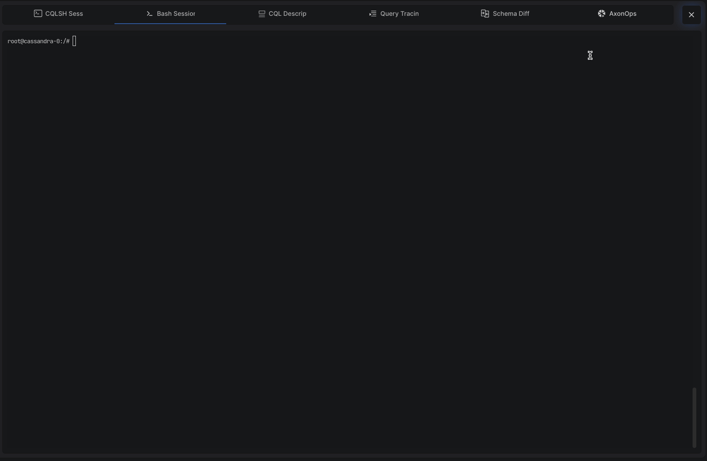
-
2.5.1.3.2.1.1.1
In the left side of the dashboard, a reload icon has been injected by the workbench.
2.5.1.3.2.1.1.1.1 Click the icon.
- 2.5.1.3.2.1.1.1.1.1 The AxonOps dashboard has been reloaded.
- 2.5.1.3.2.1.1.1.1.1
-
-
2.5.1.3.3 Stop local clusters.
To ensure consistency, stopping local clusters is the same as closing a regular workarea (#2.4.1.3.4).2.5.1.3.3.1 Related to test (#2.4.1.3.4), perform the same actions.
- 2.5.1.3.3.1.1 The local cluster has been stopped/downed.
- 2.5.1.3.3.1.1
2.5.1.3.3.2
Exclusive behaviors for local clusters. The workbench detects and handles the local cluster's Docker project in the background in many ways and scenarios.2.5.1.3.3.2.1 Quit the workbench while the local cluster is running.
- 2.5.1.3.3.2.1.1 The workbench has executed a stop/down command for the local cluster.
- 2.5.1.3.3.2.1.1
2.5.1.3.3.2.2 Quit the workbench while the local cluster is being stopped.
- 2.5.1.3.3.2.2.1 Nothing should happen, the stopping process will continue till it's finished.
- 2.5.1.3.3.2.2.1
2.5.1.3.3.2.3 Attempt to start a local cluster that is already running/being stopped.
-
2.5.1.3.3.2.3.1
The workbench showed feedback about the status of the local cluster. -
2.5.1.3.3.2.3.2
The workbench executed a stop/down command for the local cluster, and showed a poinned toast for that process. -
2.5.1.3.3.2.3.3
Once the command is finished, or the local cluster's pending process has finished, we are able to start the local cluster.
-